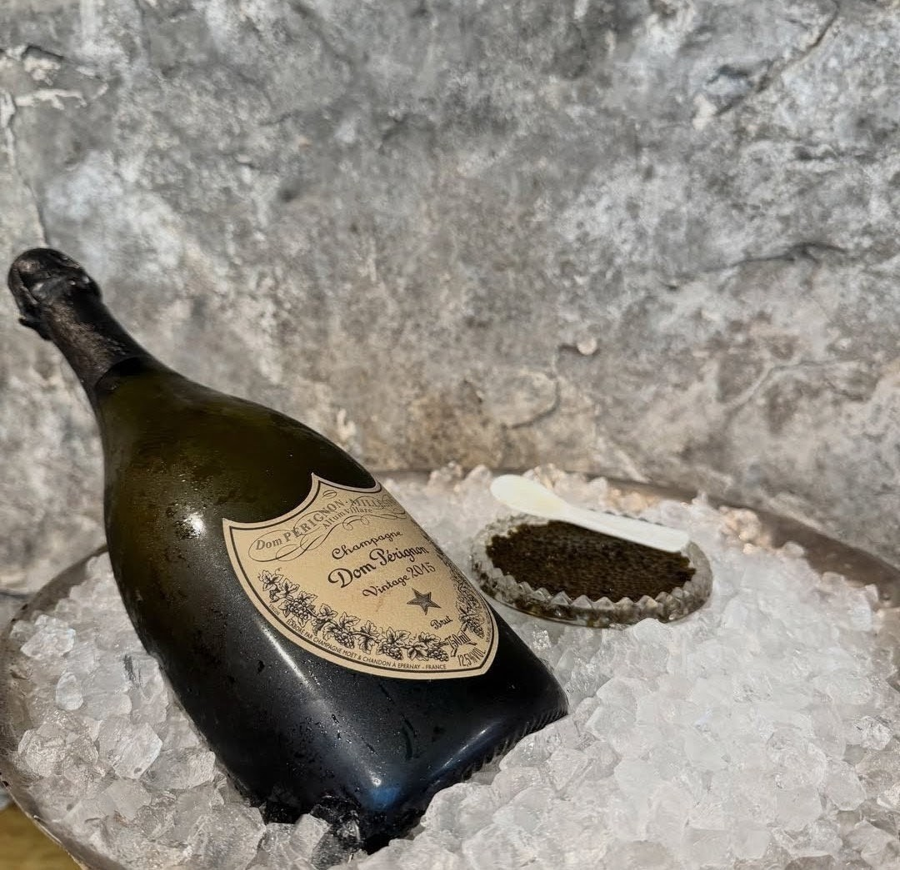

Ottawa's finest tables have always taken their wine as seriously as their food, but the city's most exciting wine experiences aren't only about what's poured — they're about how each glass is chosen. The five restaurants below build wine into the meal itself, whether through deep cellars, thoughtful pairings, or lists shaped by a genuine point of view.
What separates a good wine list from a memorable one is intention — a program built around the kitchen's specific voice, rather than a menu bolted on for the sake of having one. Each of these five rooms treats wine as an essential part of the evening, not an afterthought, and each does it in a distinctly different way.
A pairing program built around fermentation and restraint
Antheia's approach to wine mirrors its kitchen — restrained, unconventional, and built around fermentation. The pairing program frequently reaches beyond the expected, favouring skin-contact whites, low-intervention producers and small-batch bottles that echo the same preserved, acid-driven flavours coming out of the kitchen.
It isn't a conventional wine list, and that's precisely the point. Chef Briana Kim's pairings are built to complement a menu that refuses convention itself, making every glass feel like a considered extension of the food rather than an afterthought.
A French-leaning cellar built for lingering over a bottle
True to its French roots, Gitanes built its identity around wine as much as food. The list runs deep on Burgundy and the Rhône, with a rotating selection of by-the-glass pours chosen specifically to keep pace with a menu that shifts with the seasons.
The room itself, with its close tables and low light, is built for lingering over a bottle rather than rushing through one — making it one of the more genuinely convivial wine-focused rooms downtown.
Course-by-course pairings chosen to match the kitchen's vision
Atelier doesn't hand guests a wine list any more than it hands them a menu — pairings are selected course by course, chosen specifically to meet whatever the kitchen is doing that particular evening. It's an approach that treats wine as an ingredient in the larger composition, not a separate decision made at the start of the meal.
For guests willing to hand that decision over entirely, it results in some of the most interesting pairing choices in the city — bottles selected for how they interact with a specific dish, not for prestige or familiarity.
One of the city's deepest cellars, curated over two decades
Few wine programs in Ottawa carry the depth of Beckta's. Built over more than two decades, the cellar reflects a level of curation rarely found outside much larger cities, with staff who treat pairing as a genuine craft rather than a formality.
It's the kind of list built for people who already know roughly what they want, as much as for those happy to hand the decision to a knowledgeable server — a wine experience built on trust and expertise rather than spectacle.
A global list narrated course by course, alongside the tasting menu
Aiana's wine list matches the ambition of its dining room — a global selection chosen to complement a nine-course tasting menu that pulls from French technique and a broader, more international sensibility.
Each pairing is introduced tableside alongside its course, turning the wine list into as much a part of the evening's narrative as the food itself.
Five rooms, five distinct philosophies on wine — proof that Ottawa's fine dining scene takes what's in the glass just as seriously as what's on the plate.